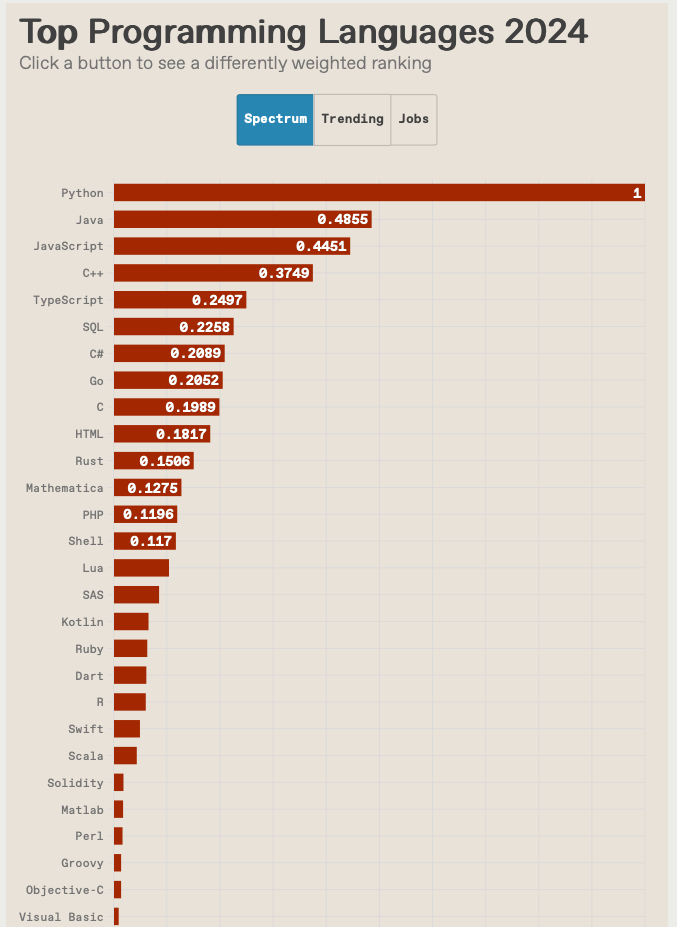
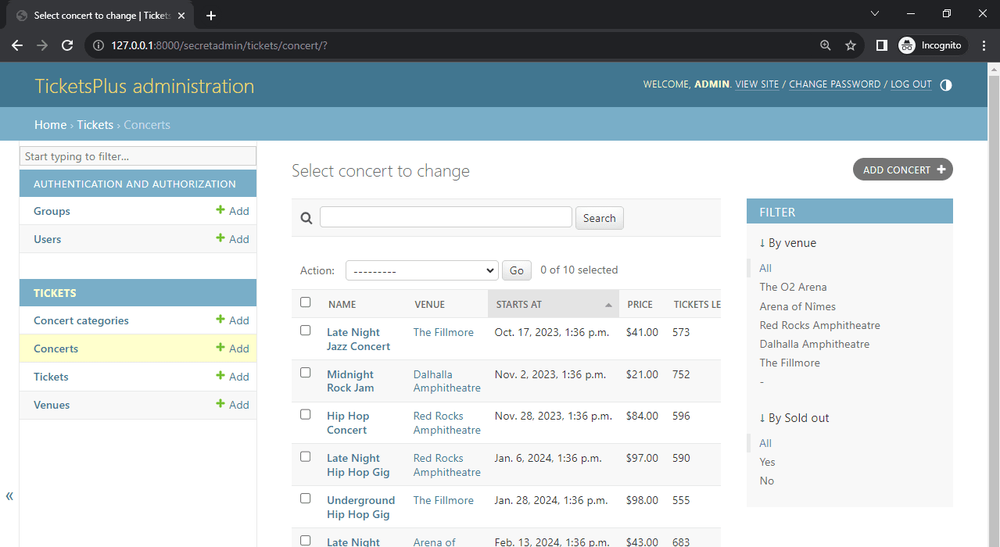

Intro ao PythonIntroQual é a idéia do Python?"Jeito Python" de programas (Pythonic)1. Princípios do Código Pythonicoa) Legibilidade acima de tudob) "Explícito é melhor que implícito"c) "Simple is better than complex" d) "Don’t reinvent the wheel"2. Abstração em Objetosa) Variáveis como Objetosb) Estruturas de Dados como Objetosc) Duck Typing3. Padrões Pythonicos Comunsa) Context Managers (with)b) List Comprehensionsc) F-strings (formatação elegante)d) Desempacotamento4. Quando Usar OOP em Python5. Exemplo ComparativoProblema: Calcular média de notas.Resumo jeito PythonicPython foi concebida desde o início para ser orientada a objetos?Todos os dados e variáveis são considerados objetos?Exemplo demonstrando que tudo é objeto:Resumo:Linguagem Interpretada1. Interpretação vs. Execução em Python2. Mecanismos que viabilizam projetos grandes em Pythona) Modularização e Pacotesb) Namespaces e Escopoc) Orientação a Objetos (OOP)d) Ferramentas de Gestão de Dependênciase) Documentação e Type Hintsf) Testes e Debuggingg) Compilação para Bytecode/Cython3. Desafios e Mitos4. Exemplo de Projeto Grande em PythonDjangoa) Desenvolvimento Web Backendb) Aplicações com Banco de Dadosc) Sistemas com Painel Administrativod) Projetos que Priorizam SegurançaConclusãoPara programadores em C, Pascal ou Matlab1. Para Programadores de C (Baixo Nível/Estruturas Rígidas)a) Gerenciamento Automático de Memória b) Tipagem Dinâmica vs. Estática c) Ausência de Ponteiros e Aritmética de Memória d) Performance 2. Para Programadores de Pascal (Estruturada/Fortemente Tipada)a) Sintaxe Mais Permissivab) Orientação a Objetos (OOP) Opcional c) Tipagem Forte, mas Dinâmica 3. Para Programadores de Matlab (Científico/Matricial)a) Índices Começando em 0 vs. 1 b) Operações Matriciais sem Sintaxe Dedicada c) Ambiente Interativo Diferente 4. Desafios Comuns a Todosa) Filosofia "Pythonica" b) Bibliotecas e Ecossistema c) Tratamento de Exceções vs. Verificações Rígidas Exemplo Prático: Soma de Elementos (C vs. Python)Como Superar Essas Dificuldades?ResumoReferências
Embora o Python tenha sido conceituado no final da década de 1980 e, após sua implementação em 1989, tenha emergido como uma nova plataforma de linguagem multiparadigma com o advento do Big Data. Python inclui várias estruturas de dados, bibliotecas padrão com a implementação de análise de sentimento e código de ciência de dados.

Fonte da figura acima: The Top Programming Languages 2024: Typescript and Rust are among the rising stars, IEEE Spectrum, 22 Aug 2024.
Na busca por uma boa linguagem de programação na qual muitos aplicativos de ciência de dados possam ser desenvolvidos, o python surgiu como uma solução de programação completa. Devido à baixa curva de aprendizado e flexibilidade do Python, ele se tornou uma das linguagens que mais crescem. As bibliotecas em constante evolução do Python o tornam uma boa escolha para análise de dados [Nagpal & Gabrani, 2019].
Python é uma linguagem interpretada que se tornou mais comumente usada em aplicativos HPC (High-Performance and Scientific Computing). O Python se beneficia da capacidade de escrever módulos de extensão em C, que podem usar ainda mais bibliotecas otimizadas que foram escritas em outras linguagens compiladas. Para usuários de HPC, duas das extensões mais comuns são NumPy e mpi4py (MPI = Multiple Processes Instructions ou Programação Paralela) [Smith, 2016].
Um prática boa e eficaz associada com o aprendizado de uma linguagem de programação está relacionada com uso eficaz de fluxogramas como ferramenta de aprendizado. A capacidade dos alunos de resolver problemas usando fluxogramas é um bom preditor de sua capacidade de resolver problemas com Python. Isso significa que a maioria dos alunos que têm um bom desempenho usando fluxogramas terá um bom desempenho em Python. A maioria dos alunos achou o fluxograma mais fácil do que o Python (63%) e relatou que o fluxograma os ajudou a entender como escrever programas em Python (73%) [Cabo, 2018].
Mais sobre fluxogramas? Miro: Fluxogramas, Lucidchart: O que é um fluxograma? ou Wikipedia: Fluxograma.
Parallel Computing in Python using mpi4py (Stephen Weston, Yale Center for Research Computing, 2017).
Uso da biblioteca mpi4py-fft para cálculo da FFT (Fast Fourier Transform)
A principal ideia por trás da linguagem de programação Python é legibilidade, simplicidade e produtividade. Guido van Rossum, o criador do Python (1998), projetou a linguagem com os seguintes princípios em mente:
O "jeito Python" de programar é guiado por princípios conhecidos como "Pythonic", que refletem a filosofia do Python, resumida no documento "The Zen of Python" (acessível digitando import this no interpretador). Seguem-se os conceitos-chave:
Nomes claros para variáveis/funções (ex.: total_vendas em vez de tv).
Uso de indentação obrigatória (sem {}).
Exemplo:
x# Jeito NÃO Pythonicif x>0:print(x)# Jeito Pythonicif x > 0: print(x)Soluções diretas são valorizadas. Exemplo:
xxxxxxxxxx# Jeito NÃO Pythonic (loop manual)lista = []for i in range(10): lista.append(i * 2)# Jeito Pythonic (list comprehension)lista = [i * 2 for i in range(10)]Use funções embutidas e bibliotecas padrão. Exemplo:
xxxxxxxxxx# Jeito Pythonic (usando enumerate)for indice, valor in enumerate(['a', 'b', 'c']): print(indice, valor)Em Python, tudo é objeto (inteiros, strings, funções, módulos, etc.), e a linguagem incentiva o uso de OOP, mas não força seu uso exclusivo.
Até tipos "primitivos" têm métodos:
xxxxxxxxxxnome = "python"print(nome.upper()) # Objeto string com método upper()Listas, dicionários, etc., são classes com métodos embutidos:
xxxxxxxxxxnumeros = [1, 2, 3]numeros.append(4) # Método da classe listO tipo é definido pelo comportamento (métodos), não pela classe:
xxxxxxxxxxclass Pato: def nadar(self): print("Nadando!")def acao(objeto): if hasattr(objeto, 'nadar'): # Se tem o método, é um "pato" objeto.nadar()acao(Pato()) # Funciona!with)Gerenciamento limpo de recursos (arquivos, conexões):
xxxxxxxxxxwith open('arquivo.txt', 'r') as file: # Fecha automaticamente conteudo = file.read()Substitui loops para criar listas de forma concisa:
xxxxxxxxxxquadrados = [x ** 2 for x in range(10)]Mais legível que .format() ou %:
xxxxxxxxxxnome = "Alice"print(f"Olá, {nome}!")Atribuição múltipla e desestruturação:
xxxxxxxxxxa, b = (1, 2) # Tupla desempacotadaUse classes para encapsular lógica complexa ou estados. Exemplo:
xxxxxxxxxxclass Cliente: def __init__(self, nome, email): self.nome = nome self.email = email def enviar_mensagem(self, mensagem): print(f"Enviando '{mensagem}' para {self.email}")Evite OOP excessivo para problemas simples (Python permite funções isoladas).
Jeito NÃO Pythonic:
xxxxxxxxxxnotas = [7.5, 8.0, 6.5]soma = 0for i in range(len(notas)): soma += notas[i]media = soma / len(notas)Jeito Pythonic:
xxxxxxxxxxnotas = [7.5, 8.0, 6.5]media = sum(notas) / len(notas)O "jeito Python" combina:
Python permite multi-paradigma, mas o estilo "Pythonic" prioriza simplicidade e elegância.
Não exatamente. Python foi criada para ser uma linguagem multiparadigma, permitindo programação procedural, funcional e orientada a objetos. No entanto, o suporte a OOP foi incorporado desde o início, e quase tudo em Python é um objeto (como veremos abaixo). A linguagem não força o uso de OOP, mas facilita seu uso quando necessário.
Sim! Em Python, tudo é um objeto. Isso inclui:
Até mesmo tipos primitivos, como int e float, são objetos em Python, com métodos associados (ex.: (5).bit_length()).
xxxxxxxxxx# Números são objetosx = 10print(x.bit_length()) # Saída: 4 (método do objeto 'int')# Strings são objetoss = "python"print(s.upper()) # Saída: 'PYTHON'# Funções são objetosdef hello(): print("Olá!")hello.msg = "Mundo!"print(hello.msg) # Saída: 'Mundo!'Mesmo sendo uma linguagem interpretada, Python é amplamente utilizado em projetos grandes e complexos. Existem mecanismos permitem que Python seja eficiente mesmo em código extensos.
Python permite (e incentiva) a divisão do código em módulos (arquivos .py) e pacotes (diretórios com __init__.py).
Exemplo de estrutura para um projeto grande:
xxxxxxxxxxmeu_projeto/│├── pacote_principal/│ ├── __init__.py│ ├── modulo1.py│ └── subpacote/│ ├── __init__.py│ └── modulo2.py│├── tests/│ └── test_modulo1.py│└── main.pyVantagem: Organização clara, reuso de código e manutenção facilitada.
Variáveis e funções têm escopo definido (global, local, não-local), evitando conflitos em projetos grandes.
Exemplo:
xxxxxxxxxx# modulo1.pyvar_global = 10def funcao(): var_local = 20 return var_global + var_localClasses, herança e polimorfismo ajudam a encapsular lógica complexa.
Exemplo:
xxxxxxxxxxclass Cliente: def __init__(self, nome): self.nome = nomeclass ClienteVIP(Cliente): def __init__(self, nome, desconto): super().__init__(nome) self.desconto = descontopip + virtualenv/venv: Isolam ambientes e gerenciam bibliotecas externas.requirements.txt ou pyproject.toml (Poetry/Pipenv) listam dependências.Docstrings padrão (Google, NumPy, etc.) e type hints (PEP 484) melhoram a legibilidade:
xxxxxxxxxxdef calcular_imposto(valor: float, taxa: float) -> float: """Calcula o imposto sobre um valor. Args: valor (float): Valor base. taxa (float): Taxa em porcentagem (0-100). Returns: float: Valor do imposto. """ return valor * (taxa / 100)Frameworks como unittest, pytest, e doctest permitem testes automatizados.
Exemplo com pytest:
xxxxxxxxxx# test_modulo1.pydef test_soma(): assert 1 + 1 == 2Para otimizar performance, trechos críticos podem ser:
.pyc).ctypes.
"Interpretado = Lento":
Verdade para cálculos intensivos, mas contornável com:
multiprocessing)."Scripts não escalam":
Django (framework web) e Pandas (análise de dados) são exemplos de projetos massivos escritos em Python, com:
Django é um framework Python de alto nível, projetado para o desenvolvimento rápido de aplicações web seguras e escaláveis. Ele segue o princípio "Baterias incluídas" (oferece tudo o que você precisa "de fábrica") e o padrão MVT (Model-View-Template), uma variação do MVC (Model-View-Controller).
Django é usado principalmente para:
Seu ORM permite trabalhar com bancos (PostgreSQL, MySQL, SQLite) sem escrever SQL manualmente.
Exemplo:
xxxxxxxxxxfrom django.db import modelsclass Produto(models.Model): nome = models.CharField(max_length=100) preco = models.DecimalField(max_digits=10, decimal_places=2)Isso cria uma tabela Produto no banco de dados automaticamente.
O módulo admin gera uma interface gráfica para gerenciar dados sem precisar codificar:
xxxxxxxxxxfrom django.contrib import adminfrom .models import Produtoadmin.site.register(Produto)
Python é perfeitamente viável para projetos grandes graças a:
Se organizado corretamente, um sistema em Python pode ser tão robusto quanto em linguagens compiladas, com a vantagem da produtividade e legibilidade.
Para programadores vindos de C, Pascal ou Matlab, a transição para Python pode apresentar desafios específicos devido às diferenças de paradigmas, sintaxe e filosofia de design. Abaixo estão as maiores dificuldades categorizadas por linguagem de origem.
C: Alocação/desalocação manual (malloc, free).
Python: Coletor de lixo (GC = Garbage Collector) gerencia memória automaticamente (deleta objetos quando eles não estão mais em uso. Mais info? Ver: Alura: O que é Garbage Collector, StackOverflow: O que é Garbage Collector e Garbage Collection and Memory Management in Python.
Dificuldade:
C: Tipos explícitos (int, float).
Python: Tipos inferidos em tempo de execução. Mais? Ver W2Schools: Python Data Types ou Documentação oficial: Data Types.
Dificuldade:
"10" + 5 → TypeError). C: Manipulação direta de endereços.
Python: Tudo é referência, sem aritmética de ponteiros.
Dificuldade:
C: Código compilado e otimizado.
Python: Interpretado, mais lento em operações intensivas.
Dificuldade:
Cython ou bibliotecas como NumPy). Matlab: NumPy for MATLAB users.
Pascal: Estrutura rígida (begin/end, var).
Python: Indentação como delimitador de blocos.
Dificuldade:
end ou ;. Pascal (Clássico): Programação procedural.
Python: Multiparadigma (OOP não é obrigatório, mas ubíqua).
Dificuldade:
lista.append()). Pascal: Tipos declarados explicitamente.
Python: Tipos associados a valores, não a variáveis.
Dificuldade:
x = 10 → x = "texto").
Matlab: Índices iniciam em 1.
Python: Índices iniciam em 0.
Dificuldade:
array[0] vs. array(1)). Matlab: Operações com matrizes usando A * B (multiplicação matricial).
Python: Requer NumPy para similaridade (A @ B).
Dificuldade:
NumPy para cálculos científicos.Matlab: IDE integrada com ferramentas gráficas.
Python: Uso de Jupyter Notebook ou scripts .py.
Dificuldade:
matplotlib (https://matplotlib.org) para plotagem (similar, mas com sintaxe distinta).
Dificuldade:
list comprehensions) ou otimizações prematuras. Dificuldade:
pip) sem um "core" unificado como em Matlab. C/Pascal: Verificação manual de erros.
Python: Uso de try/except como padrão.
Dificuldade:
C:
xxxxxxxxxxint soma = 0;for (int i = 0; i < n; i++) { soma += array[i];}Python:
xxxxxxxxxxsoma = sum(array) # Jeito Pythonic
Para programadores C:
ctypes ou Cython para integrar código C. Para programadores Pascal:
Para programadores Matlab:
Dominar NumPy e pandas para substituir operações matriciais.
Adotar Jupyter para um fluxo interativo.
Livro recomendado: Fluent Python (Ramalho, 2022) para entender o "jeito Python" avançado.
A maior barreira não é a sintaxe, mas a mudança de mentalidade:
>>> import this. Luciano Ramalho, Fluent Python: Clear, Concise, and Effective Programming (English Edition), O'Reilly Media; 2º edição, 1016 pp., 10 maio 2022. 4.7 ⭑⭑⭑⭑⭑ (580 aval) Obs.: Livro não indicado para iniciantes em Python! Para iniciantes é recomendado o livro "Python Crash Course, 3rd Edition: A Hands-On, Project-Based Introduction to Programming", de 2023.
Luciano Ramalho, Python Fluente: Programação Clara, Concisa e Eficaz, Novatec Editora, 1a.ed, 800 pp., 2015 - 4.8 ⭑⭑⭑⭑⭑ (790 aval)
Eric Matthens, Python Crash Course, 3rd Edition: A Hands-On, Project-Based Introduction to Programming, No Starch Press, 552 pp., 3ª edição (10 janeiro 2023). 4.7 ⭑⭑⭑⭑⭑ (1519 aval)
Abrange Django, matplotlib e plotly, e pygame.
Kenneth Reitz, Tanya Schlusser, O Guia do Mochileiro para Python!, Novatec Editora, 360 pp., 1ª edição (16 fevereiro 2017) - 4.7 ⭑⭑⭑⭑⭑ (122 aval)
Dane Hillard, Practices of the Python Pro, Manning, Manning; First Edition, January 14, 2020. 4.2 ⭑⭑⭑⭑⭒ (49 aval) Resumo: Os desenvolvedores profissionais conhecem os muitos benefícios de escrever um código de aplicativo limpo, bem organizado e fácil de manter. Ao aprender e seguir padrões estabelecidos e melhores práticas, você pode levar seu código e sua carreira a um novo nível. Com o Practices of the Python Pro, você aprenderá a projetar um software de nível profissional, limpo e de fácil manutenção em escala usando a linguagem de programação incrivelmente popular, Python. Você encontrará exemplos fáceis de usar pseudocódigo e Python para introduzir as melhores práticas de desenvolvimento de software, juntamente com dezenas de técnicas instantaneamente úteis que o ajudarão a codificar como um profissional.
Stirling Hale, Wizardry Press, Absolute Beginner's Guide to Python Programming: Master Coding Quickly with Hands-On, Real-World Projects, Step-By-Step Guidance, and Comprehensive Learning for All Ages (Absolute Beginner's Guides), Wizardry Press, 216 pp, 2024. 4.8 ⭑⭑⭑⭑⭑ (379 aval)
Al Swigart, Automate the Boring Stuff with Python, 2nd Edition: Practical Programming for Total Beginners, No Starch Press, 2nd edition, 2019, 552 pp., 4.7 ⭑⭑⭑⭑⭑ (3334 aval).
Abrange trabalhar com arquivos em massa, automatizar e-mails e textos, raspar a web e muito mais.
C. Cabo, "Eficácia do Fluxograma como uma Ferramenta de Andaime para Aprender Python", 2018 IEEE Frontiers in Education Conference (FIE), San Jose, CA, EUA, 2018, pp. 1-7, doi: 10.1109/FIE.2018.8658891. Palavras-chave: Python; Flowcharts; Profissão de programação; Ferramentas;Resolução de problemas; Flowgrama, Python, compreensão de programas, geração de programas, programadores novatos, educação em ciência da computação}. URL: https://ieeexplore.ieee.org/stamp/stamp.jsp? tp=&arnumber=8658891&isnumber=8658371
R. Smith, "Performance of MPI Codes Written in Python with NumPy and mpi4py," 2016 6th Workshop on Python for High-Performance and Scientific Computing (PyHPC), Salt Lake City, UT, USA, 2016, pp. 45-51, doi: 10.1109/PyHPC.2016.010. URL: https://ieeexplore.ieee.org/stamp/stamp.jsp?tp=&arnumber=7836843&isnumber=7836833
A. Nagpal e G. Gabrani, "Python para Análise de Dados, Aplicações Científicas e Técnicas", Conferência Internacional Amity de Inteligência Artificial (AICAI), Dubai, Emirados Árabes Unidos, 2019, pp. 140-145, doi: 10.1109/AICAI.2019.8701341. URL: https://ieeexplore.ieee.org/stamp/stamp.jsp? tp=&arnumber=8701341&isnumber=8701225
Fernando Passold, em 05/04/2025